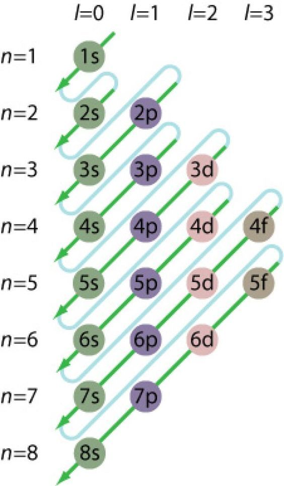

Cientistas
Foi preciso muitos anos e o esforço de muitos cientistas para a tabela periódica estar do jeito que é hoje. A primeira divisão feita nos elementos foi classifica-los em metais e não metais;
Iohann Wolfgang Döbereiner (1780 – 1849)
Ele é conhecido por formular a lei das tríades, um conceito precursor da Tabela Periódica moderna. Döbereiner observou que certos grupos de três elementos com propriedades químicas semelhantes exibiam uma tendência de ter uma relação numérica entre suas massas atômicas. Ele agrupou elementos como o cloro, o bromo e o iodo, e também o enxofre, o selênio e o telúrio, baseando-se em suas similaridades. Embora a ideia das tríades tenha sido perdida com o tempo, ela contribuiu para o desenvolvimento subsequente da Tabela Periódica, demonstrando a relação entre as propriedades químicas e as massas atômicas dos elementos. Portanto, Döbereiner é lembrado por sua contribuição no caminho para a organização sistemática dos elementos.
Alexandre-Émile Béguyer de Chancourtois (1820-1886)
Foi um químico francês que é conhecido por ter desenvolvido um sistema de organização dos elementos denominado "parafuso telúrico". Ele traçou os elementos em um cilindro em espiral, de modo que elementos com propriedades químicas semelhantes estavam alinhados verticalmente. Sua abordagem, proposta em 1862, foi precursora da organização periódica dos elementos. Embora seu trabalho não tenha recebido muita atenção em sua época, suas ideias foram redescobertas e reconhecidas posteriormente como uma contribuição significativa para a Tabela Periódica.
John Newlands (1837-1898)
Foi outro cientista que contribuiu significativamente para a organização dos elementos químicos e é lembrado por sua proposta de "Lei das Oitavas". Ele foi um químico inglês que, em 1864, apresentou a ideia de que os elementos exibiam uma repetição regular de propriedades químicas a cada oitava posição, semelhante à escala musical. Newlands organizou os elementos em ordem crescente de massa atômica e notou que, a cada sete elementos, as propriedades químicas se repetiam de maneira semelhante à oitava nota musical. Sua lei, no entanto, não foi inicialmente bem recebida pela comunidade científica, e ele provocou críticas por não incluir todos os elementos conhecidos em seu arranjo. Apesar disso, a ideia de Newlands de reconhecer padrões de repetição nas propriedades químicas dos elementos ajudou a preparar o terreno para a compreensão posterior da periodicidade química e para o desenvolvimento da Tabela Periódica de maneira mais abrangente. Embora sua "Lei das Oitavas" tenha suas limitações, ela desempenhou um papel importante na evolução do pensamento sobre a organização dos elementos.
Dimitri Mendeleiev (1834-1907)
Ele foi um químico russo que é amplamente reconhecido como o criador da Tabela Periódica moderna. Ele formulou a Tabela Periódica dos elementos químicos de uma maneira que revolucionou nossa compreensão das propriedades e relações entre os elementos. Em 1869, Mendeleev organizou os elementos conhecidos até então em ordem crescente de massa atômica e os colocaram em colunas e com base em suas propriedades químicas semelhantes. Ele deixou espaços vazios na tabela para elementos que ele anterior que seriam descobertos no futuro. Além disso, ele ajustou a ordem dos elementos com base em suas propriedades, desafiando a ordem estrita de massa atômica para manter a semelhança das propriedades químicas. Uma das contribuições mais notáveis de Mendeleev foi a previsão precisa das propriedades de elementos ainda não descobertas. Ele usou sua tabela para prever as propriedades dos elementos faltantes e acertou em várias de suas previsões, o que validou enormemente sua abordagem. A contribuição de Mendeleev para a organização dos elementos na Tabela Periódica é fundamental e teve um impacto profundo na química e na compreensão dos elementos. Originalmente, ele organizou os 60 elementos conhecidos em sua época em cartelas e começou a organizá-los.
Henry Moseley (1887-1915)
Era um físico inglês que fez uma contribuição fundamental para a organização dos elementos na Tabela Periódica, especificamente na especificação do número atômico dos elementos, partindo da onde Mendeleev havia feito. Antes das pesquisas de Moseley, os elementos eram organizados principalmente com base em suas massas atômicas. No entanto, Moseley realizou experimentos envolvendo a difração de raios X em átomos, especificamente nos elementos que formavam as séries de elementos de transição. Ele descobriu uma relação clara entre a frequência dos raios X emitidos pelos átomos e o número desses elementos atômicos. Ou seja, ele descobriu que a carga elétrica do núcleo correspondia ao número atômico. A partir dessas descobertas, Moseley aceitou a reorganização da Tabela Periódica com base no número atômico, em vez da massa atômica. Ele ouviu que o número atômico, que correspondia ao número de prótons no núcleo de um átomo, era uma propriedade fundamental que determinava as propriedades químicas de um elemento. Essa reorganização corrigiu muitas das inconsistências e anomalias presentes na tabela então até. O trabalho de Moseley liderou uma base sólida para a Tabela Periódica moderna, que é organizada de acordo com o número atômico crescente. Sua contribuição é considerada um marco importante na história da química e da física, e seu trabalho teve um impacto profundo na compreensão dos elementos e de sua organização sistêmica.
Glenn T. Seaborg (1912-1999)
Desempenhou um papel significativo na expansão e organização da Tabela Periódica ao descobrir
vários elementos
transurânicos e contribuir para a reorganização da tabela para esses elementos acomodados.
Seaborg foi fundamental na descoberta de dez elementos químicos, incluindo o plutônio (94), o amerício (95), o
cúrio (96), o berquélio (97), o califórnio (98), o einstênio (99), o férmio (100), o mendelévio (101), o nobélio
(102) e o laurêncio (103). Esses elementos são conhecidos como elementos transurânicos, uma vez que têm números
atômicos maiores do que o urânio (92).
Seaborg também foi responsável por propor uma nova região na Tabela Periódica para acomodar os elementos
transurânicos, chamada de série dos actinídeos. Ele também contribuiu para a reorganização da tabela para refletir
as propriedades químicas e a estrutura eletrônica dos elementos de uma maneira mais lógica e coerente.
Além disso, Seaborg teve um papel importante na promoção da ciência e na divulgação científica, servindo como
presidente da Comissão de Energia Atômica dos Estados Unidos (mais tarde conhecida como Comissão de Regulamentação
Nuclear) e desempenhando um papel significativo na promoção da paz e do uso Pacífica da Energia Nuclear.
A Tabela
Organização da tabela:
Elementos
a Tabela Periódica atual é organizada em linhas horizontais em ordem crescente de número atômico. Tanto que o primeiro elemento químico que aparece da esquerda para a direita na parte superior é o hidrogênio, que é o elemento de menor número atômico, 1. Logo à sua direita vem o hélio, He, com número atômico igual a 2, depois vem o lítio, com número atômico igual a 3, seguido do berílio, Be, de número atômico igual a 4, e assim por diante. Essa classificação crescente de números atômicos permite organizar os elementos em grupos ou famílias (colunas) que possuem propriedades semelhantes, além disso, as linhas horizontais também nos revelam particularidades a respeito dos átomos dos elementos.
Grupos ou famílias (Colunas):
As colunas são chamadas de grupos ou famílias. Esses nomes são bem apropriados, pois os membros de uma família possuem várias características físicas, emocionais e psicológicas semelhantes; além disso, os membros de um grupo específico possuem também objetivos e gostos similares. Da mesma forma, os elementos pertencentes a um mesmo grupo ou a uma mesma família da Tabela Periódica possuem propriedades físicas e químicas semelhantes. Isso acontece porque os elementos químicos que estão em uma mesma família possuem a mesma quantidade de elétrons na camada de valência, isto é, na última camada eletrônica:
- Família 1: Possuem todos 1 elétron na camada de valência;
- Família 2: Possuem todos 2 elétrons na camada de valência;
- Família 13: Possuem todos 3 elétrons na camada de valência;
- Família 14: Possuem todos 4 elétrons na camada de valência;
- Família 15: Possuem todos 5 elétrons na camada de valência;
- Família 16: Possuem todos 6 elétrons na camada de valência;
- Família 17: Possuem todos 7 elétrons na camada de valência;
- Família 18: Possuem todos 8 elétrons na camada de valência.
Períodos (Linhas):
As sete linhas horizontais que aparecem na Tabela Periódica são os períodos e indicam a quantidade de camadas eletrônicas que os átomos de tais elementos possuem. Por exemplo, todos os elementos do primeiro período (primeira linha) da Tabela Periódica possuem apenas uma camada eletrônica, a camada K; enquanto isso, todos os elementos do segundo período têm duas camadas eletrônicas, as camadas K e L, e assim por diante.
Elementos
Elementos representativos
Antigamente eram todos os membros das famílias que tinham o número acompanhado da letra “A” (1A, 2A, 3A, 4A, 5A, 6A, 7A e 8A). Hoje eles estão nas famílias 1, 2, 13 a 18. São os elementos mais importantes da Tabela Periódica e são os mais estudados no Ensino Médio. Todos os elementos representativos possuem o seu elétron mais energético situado nos subníveis “s” ou “p”.
Elementos de transição
Antigamente eram todos os membros das famílias que tinham o número acompanhado da letra “B” (1B, 2B, 3B, 4B, 5B, 6B, 7B e 8B), mas hoje são os membros das famílias 3 a 12. Esses elementos estão representados na região central da Tabela. Todos os elementos de transição possuem o seu elétron mais energético situado nos subníveis “d” ou “f”.
Elementos de transição externa
São aqueles que estão expostos regularmente como os demais elementos na Tabela Periódica. Eles estão representados na região central da Tabela. Seus elétrons mais energéticos ficam no subnível “d”.
Elementos de transição interna
Esses elementos estão abaixo do corpo principal da Tabela e são duas séries: a série dos lantanídeos e a série dos actinídeos. Seus elétrons mais energéticos ficam no subnível “f”.
Tabelas ao longo do tempo
Lei das Tríades
De acordo com Dobereiner, quando os elementos são organizados em ordem crescente de suas massas atômicas, a
média aritmética das massas atômicas do primeiro e terceiro elemento em uma tríade é aproximadamente igual à massa
atômica do segundo elemento nessa tríade . Ele também propôs que esta lei
era válida para outras propriedades dos elementos também. Uma dessas propriedades era a densidade.
A primeira tríade de Dobereiner foi descoberta em 1817. É composta de metais alcalino-terrosos, ou seja, cálcio, estrôncio e bário. Mais tarde, mais três tríades foram descobertas

Parafuso Telúrico
Em 1862, Chancourtois organizou os elementos químicos conhecidos em ordem crescente de suas massas atômicas por uma linha espiral em volta de um cilindro. Esse arranjo ficou conhecido como Parafuso Telúrico, sendo o termo telúrico referente à terra. Chancourtois baseava-se no peso atômico do elemento químico oxigênio, na época já estabelecido como 16. Assim, utilizou um cilindro, dividiu-o em 16 segmentos iguais, e marcou uma hélice na superfície desse cilindro, formando entre ela e seu eixo um ângulo de 45°. Sobre essa hélice dispôs os elementos químicos em ordem crescente de seus pesos atômicos. Percebeu então que “a hélice atravessava as geratrizes a distâncias cujos valores eram múltiplos de 16 e os elementos onde os pesos atômicos diferiam em 16 unidades, caíam na mesma geratriz”1. Observou também que o grupo de elementos de cada geratriz apresentava semelhanças em suas propriedades, ao menos àquelas comuns e conhecidas na época.
"Lei das Oitavas"
John Newlands organizou os elementos químicos em uma tabela obedecendo a uma sequencia de ordem crescente de suas massas atômicas, chamando a atenção a um fato que julgava bastante intrigante e de enorme relevância: o oitavo elemento, a partir de um primeiro qualquer, seria uma espécie de repetição por suas semelhanças, o que lembraria a escala musical, onde a oitava nota lembra a primeira, (dó, ré, mi, fá, sol, lá, si, dó, ré, mi, fá ...). Esta foi outra tentativa de ordenação para os elementos químicos, a qual mostrava uma certa periodicidade.
Conforme pode ser observado na figura abaixo, Newlands mostrou algumas regularidades interessantes entre alguns dos elementos químicos conhecidos na época, como o lítio (Li) e o sódio (Na) e entre o magnésio (Mg) e o cálcio (Ca), conforme hoje são conhecidas. Mas Newlands percebera que sua tabela somente funcionava corretamente para as duas primeiras oitavas; nas demais haviam muitas inconsistências.

Tabela de Moseley
A principal contribuição que Moseley deu ao trabalho original foi ordenar os elementos pelo número atômico (número de prótons do átomo), em vez da massa atômica. Organizar a tabela periódica pelo número atômico é melhor pois o número de prótons é mais fácil de medir que o peso dos átomos. Outra importância do número atômico é que, em 1913, Moseley organizou a tabela periódica por ordem crescente desse número. Assim, é possível verificar que apenas o número atômico aumenta de forma inteira e consecutiva na tabela. A identificação do número atômico na tabela periódica utiliza a sequência de números inteiros e consecutivos
Tabela de Seaborg
Dentre os feitos de Seaborg está a organização da série dos actinídeos na Tabela Periódica dos elementos químicos. Ele propôs que os elementos Th (Tório), PA (Protactíneo) e U (Urânio) deveriam ser os primeiros membros dessa série. Os trabalhos de Seaborg lhe renderam um prêmio Nobel no ano de 1951, pela descoberta do Plutônio. Mas não foi somente este elemento que Seabord isolou, ele e sua equipe de pesquisa foram os responsáveis pela descoberta de outros elementos como, por exemplo, amerício (Am), cúrio (Cm), berquélio (Bk), califórnio (Cf), einstênio (Es), férmio (Fm) e mendelévio (Es). Não obstante, Seaborg se tornou diretor do Laboratório Metalúrgico da Universidade de Chicago, onde iniciou a produção industrial do plutônio (Pu). E ele foi mais além, aperfeiçoou o método de isolamento do Pu a partir dos produtos da reação.
Diagramas
"Linus Pauling"
O diagrama de Pauling, também denominado de "princípio de Aufbau" ou, ainda, "diagrama de energia" pode ser definido como uma representação da distribuição eletrônica em que é considerada a organização dos elétrons em subníveis de energia. Por meio da estruturação do esquema do diagrama de Pauling, o químico Linus Carl Pauling (1901-1994) fez proposições além das teses já desenvolvidas sobre a distribuição de elétrons dos elementos químicos.
Eletrosfera
De mãos dadas com o diagrama de Linus Pauling está o diagrama que representa as camadas da eletrosfera A eletrosfera é onde os elétrons se encontram em um átomo. Ela é dividida em sete camadas de energia e cada uma delas comporta uma quantidade máxima de elétrons